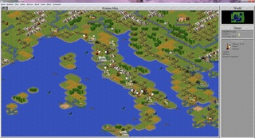

A simplified version of a Civilization game has always struck me as an oxymoron. Taking Firaxis’ famously addictive turn-based strategy series about guiding a nation from cavedwellers to spacefarers and trying to make that work as a quick and easy iPad game has, predictably, met with mixed results. Civilization Revolution 2 certainly does have trace amounts of that “just one more turn” momentum and tension, and it has the trademark hilariously warlike Gandhi, but it’s a pale shadow of the greatness of the full Civilization games. Picking one of the 18 nicely varied leaders, ranging from Abraham Lincoln to Genghis Khan to a slightly disturbingly sexed-up version of Catherine the Great, and jumping onto a randomized map of colorful terrain squares works well with the iPad’s touch controls. Bonuses like the Romans’ half-price roads and the Mongols’ ability to conquer barbarian camps and turn them into free settlements really set them apart. However, if this is your first Civ Rev game, it might take a few games to learn crucial aspects of combat and trade that the tutorial and the surprisingly sparse Civilopedia don’t bother to tell you. What’s weird is, outside of the combat, that lack of information doesn’t matter very much. I actually ended up winning my first couple of three to four-hour games on King and Emperor difficulty without fully understanding how that happened. At least the several different victory conditions, like going for culture instead of conquest or trying to build a spaceship to colonize other worlds, made starting again worthwhile. Once you’ve got the hang of things, it does become pretty easy to control an expanding army and empire of cities. You don’t have to worry about things like improving terrain, because most of the improvements to your cities’ resources come from automatic upgrades to technology instead of managing workers. That simplification works pretty well, but some of the other steps taken to minimize micromanagement end up creating some pretty dull busywork.
After the disappointing example set by X-COM 2, many gamers expected Civilization II to be nothing more than Sid Meier's original game with a few new graphics tacked on. Others were worried that the game's designers would stray too far from the path, and would ruin the spectacular play balance that made Civilization such a hit. In the end, the design team at Microprose managed to add a score of new play elements that help the aging strategy classic evolve - without sacrificing the game's addictive qualities. Although players familiar with the original Civilization will probably be able to jump in and start playing right away, a swarm of new features definitely warrants a few minutes with the manual. What players will most likely notice first is the much greater number of races to choose from, including the Sioux, the Carthaginians, and the Chinese, as well as a customizing option that lets you create any personal favorites the designers may have missed. This time around, cultural variations are also represented onscreen by four different city growth patterns. The fantastic number of new combat units adds limitless possibilities, as players figure out new ways to use marines (who can attack from the sea), cruise missiles, paratroopers, and even religious fanatics to their best advantage. For those who grew tired of the chaotic battlegrounds of the original game (remember when that chariot took out your battleship?), there's a new warfare system that gives units a score in both firepower and hit points for more realistic combat results. All of these features combine to give the game a powerful depth, and enough variation to ensure that players will be loading this one up for months to come. Plenty of little details in Civilization II are also worth noting: an improved graphics set featuring a three-quarters viewpoint similar to Syndicate or Crusader, entertaining sound effects that range from the trumpet of an elephant to the air raid sirens of an atomic attack, full-motion video clips for each of the civilization advances, and a full map editor that enables players to design their own fields of conquest. Although the game suffers from its lack of multiplayer options, there's really nothing available that can compete with its depth of play, subtlety of challenge, and pure addictive potential. The fact is, if you're a strategy fan, you've already bought this game, and if you're not, this title could turn you around. 